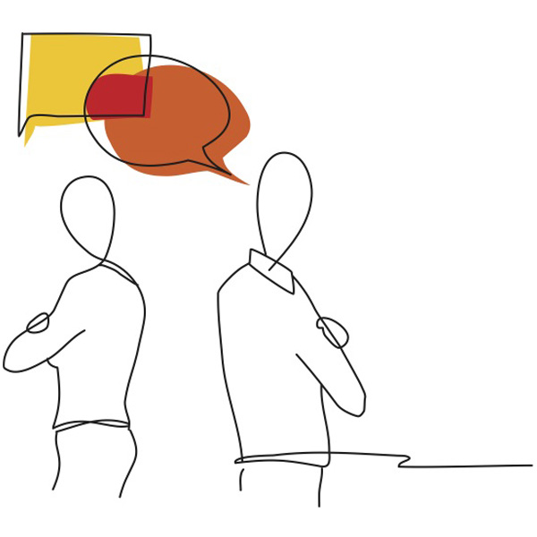

Never Stop LEARNING...
Hey Friends, Thanks for visiting vnvinfo.net!
TEAM Productivity Series-1 (Resolving Team Conflict)
Article Length: 500 words.Reading time: 3~4 minutes.
Team Productivity: Productivity simply means: Doing more in less time and less efforts. In fast pacing world, improving Team Productivity has become the centric activities of various industries, IT being one to them.
Following are the factors Affecting Productivity:
a). Team Conflict.
b). Poor Communication.
c).
Organizational Culture.
Team Conflict

Leon Huang (30), (Senior PM in IVX Infotech, Wuxi China - a fictitious firm) was updating WBS for an ongoing key project for a client in Malaysia. He felt a bit overwhelmed because despite taking all necessary precautions and measures, project was consistently 12 days behind schedule since more than a week. On time delivery was first and foremost success parameter of this project. Failing this, client will have to suffer heavy loss as well as severe negative impact on IVX Infotech goodwill in the region. Management has good faith on Leon, that’s why this key project was given to Leon.
During the meeting, backend developers start blaming each other on dependency code and non-cooperation issues. Leon realized that issues were quite trivial which could have been solved by teamwork and communication. Leon write to training manager to provide Team Building and Effective Communication crash courses to the team.
Considering sensitivity of issue training manager talked extensively to Leon to set clear training objectives and customize training contents accordingly. Team received training during weekend. Soon after the training, team started working with a new spirit towards a common goal, catch up the project schedule and deliver product on time.
Conflict is a natural part of business. It can be an opportunity to discover new approaches to challenges at the same time it can also hinder the implementation of change within organization or team. Let us review the main reasons and solutions of team conflicts:
- Lack of Training: Even though we have
latest tools and technologies for faster communication. However we
are drowning in lots of information. It is getting hard to convey
right information to right people at right time.
Solution: There is a need for “Effective Communication Training” for entire workforce at regular interval. Listening is the key part of communication. Employees must be trained to practice “Assertive Listening” for better outcome from a dialogue. Also organizations need to establish an informal communication channel (e.g. professional counselling etc.) to address workforce grievances. - Cultural (in)competency: Since childhood
most people tends to differentiate people based on their race,
color, class (rich, poor) or ethnicity. At times, unfortunately
team member rate coworker or clients and compare others based on
their own biased assumptions. These days team are dispersed
globally in different time zones. Cultural incompetency plays a big
role to form a dynamic business team.
Solution: Team members need to have global perspectives and adaptive approach while dealing with coworker and clients. Therefore team need to be trained to deal cultural diversity issues as a part of corporate learning programs. - Complex Technology: These days there are
100s of framework, languages, tools and databases to deliver
cutting edge products. It is beyond imagination that someone will
be competent in many technologies. This situation may leads to lack
of confidence and team conflict which negatively affect team
performance.
Solution: PM/management need to avail and promote various source of learning such as buying relevant books, access to websites/portals, online or enterprise learning programs, peer learning etc.
Note: Based on feedback from readers, I keep my articles short and crisp, i.e. 500 (English) words, Reading time: 3~4 minutes.
Feel free to reach me at:
Email: kaushiknt@yahoo.com
WeChat: kklove0604